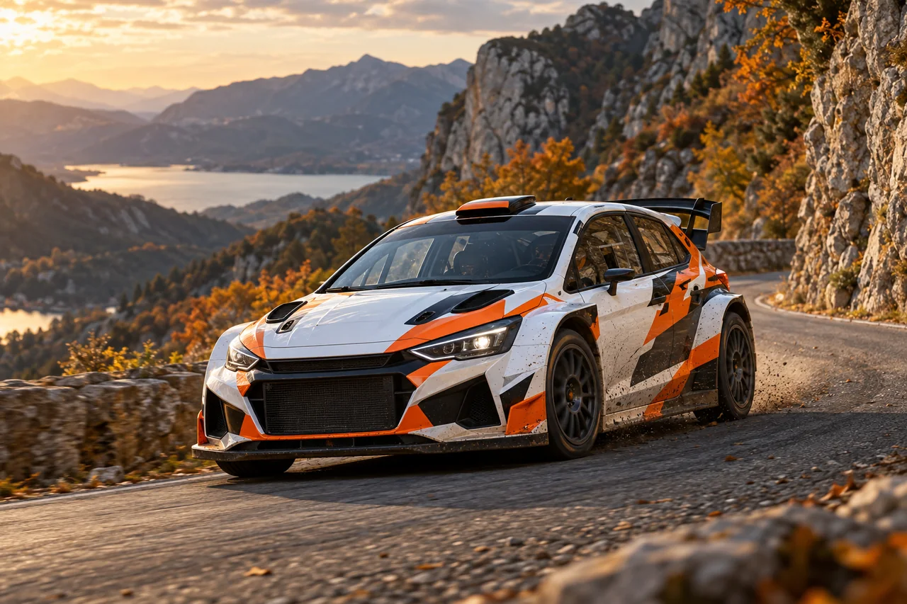
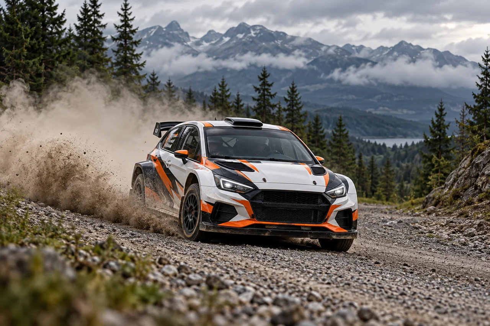
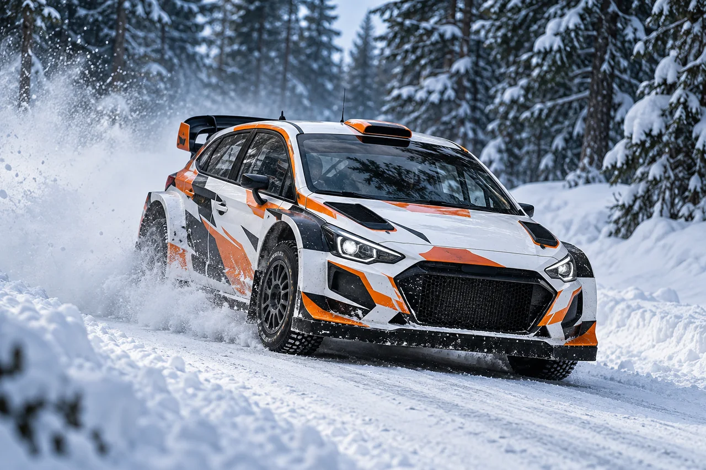

Точність у кожному русі
На твердому покритті особливо помітні траєкторія й робота з гальмуванням. Сухий асфальт, мокрі ділянки та бруд у поворотах створюють різні умови.
WRC. ДОРОГА. ХАРАКТЕР.
Гравій під колесами. Голос штурмана. Секунди на фініші. Мій фан-блог про чемпіонат світу з ралі та все, за що хочеться його дивитися.
Відчути три покриттяОдин екіпаж. Різні дороги.
Завжди боротьба з часом.

00 / КОРОТКО ПРО ГОЛОВНЕ
WRC — чемпіонат світу з ралі. На перекритих спецділянках екіпажі стартують по черзі й змагаються на час. Між ними автомобілі їдуть дорогами загального користування за звичайними правилами руху.
Результат ралі визначає сумарний час проходження спецділянок із урахуванням штрафів. Одна помилка може перекреслити перевагу, яку екіпаж збирав цілий день.
Джерело: WRC — About WRC ↗01 / ОБЕРИ СВІЙ ХАРАКТЕР

На твердому покритті особливо помітні траєкторія й робота з гальмуванням. Сухий асфальт, мокрі ділянки та бруд у поворотах створюють різні умови.

Білі узбіччя, зимове світло та сніговий шлейф. Це зовсім інший настрій ралі, де стан снігу й льоду визначає характер дороги.
02 / ЛЮДИ В КОКПІТІ
Пілот бачить найближчий поворот. Штурман уже говорить про наступний. Саме ця довіра робить ралі особливим для мене.
Усередину екіпажу ↗